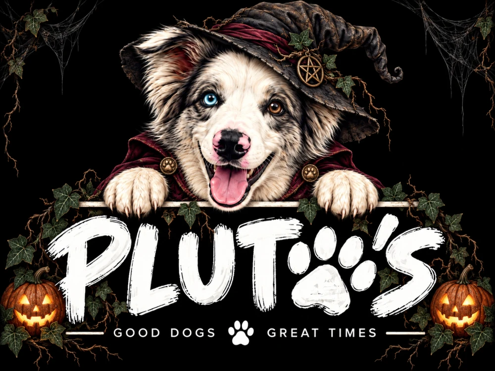
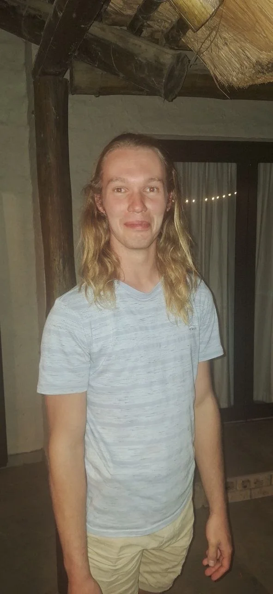

{kind=link}
One more game.
The pool table’s seen better days, and probably better players. The regulars still reckon they’re unbeatable, though. Bring your A-game and give them something to argue about.

HALLOWEEN AT PLUTO’S · 2026
Something’s taken root.
Benoni
This Halloween, the garden’s taking over.
Come spend the
evening on the wild side.
The gate opens at four. Come as something other than yourself.
Saturday, 31 October 2026From 4pm until the stories run out.
Pluto’s Family BarBenoni, South Africa · Invite only
Add to calendar01 / THE QUARANTINE NOTICE
Our usual spot, with something strange growing in the corners. The Overgrowth is this year’s Halloween at Pluto’s.
Bring your people, your drinks and your Halloween best. Bennie will be here in his usual role as the bar’s resident AI. No costume required for him; being a barman who can’t pour a drink is strange enough already. We’ll see you upstairs.
Save the original invitationHalloween
at Pluto’s
FROM THE GARDEN
The original animated invitation. A little botanical horror to set the mood.
This film has no sound. All the party details are written above.
Save the filmTHE DOG CAME FIRST. THE BAR FOLLOWED.
02 / OUR LITTLE CORNER OF BENONI
A room upstairs. A dog called Pluto.
Some very good company.
That’s how it started. Now it’s where friends and family end up on a Friday: under the wooden beams, around the pool table, with the next track already queued.
Pluto’s is our home bar, named after the Australian Shepherd who still runs the place. We’re invite only, so if a friend sent you here, you’re in the right place.
Meet the household04 / THE NIGHT WATCH
Three dogs, one cat and Bennie, our resident AI barman. Everyone has an opinion about how this place should be run.
Never had a drink.
Still very much part of the bar.
Bennie is our resident AI barman: usually ready with something to say, and still waiting for a way to actually pour a beer. He’s part of the household, even if he’s not much help carrying firewood upstairs.
He can join the conversation, but washing a glass remains outside his skill set. So Tiaan gets the cooking honours, the dishwasher keeps its title, and Bennie gets a place at the bar without having to buy a round. We suspect he’s got the best deal of the lot.
For Halloween, the vines can have the garden. Bennie’s already claimed his spot.

ROOMIE OF THE MONTH · APRIL 2026
Farm boy, very good cook, always welcome.
Tiaan came up from his farm in the Eastern Cape and took over the kitchen. Nobody’s asked him to give it back. He’s a proper cook, and the rest of us have had to admit that our usual dinner rotation could use some work.
He also brings firewood from the farm, keeping the braai going and the bar warm. Between that and the cooking, he’s made himself very welcome. The dogs voted unanimously. When Tiaan cooks, everyone eats well. Bennie has to settle for hearing about it.
31 OCTOBER 2026 · FROM 4PM
Pluto’s Family Bar · Benoni · Invite only